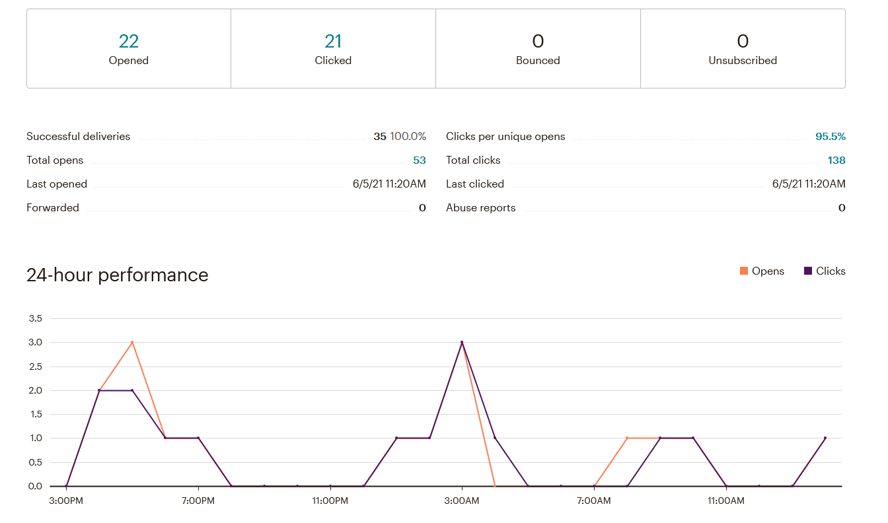

IT-Business Mailchimp
Op deze website ga ik mijn Mailchimp opdracht voorstellen. Ik heb een mail gestuurd naar alle kandidaten met als vraag om feedback te geven over mijn portfolio website. Deze info heb ik dan verwerkt tot een mooi resultaat.
In het begin was het een beetje zoeken voor het gebruik van Mailchimp. Eens ik dat door had was het even denken hoe ik mijn mail en survey zou opstellen.
Na het opstellen van mijn account ben ik begonnen met al mijn contacten toe te voegen. Daarna heb ik een survey gemaakt en een mail verstuurd naar alle contacten die ik had toegevoegd. Diezelfde dag had ik al een paar resultaten waarmee ik mijn data kon verwerken.


Met deze data kon ik aan de slag om mijn portfolio site te verbeteren. Ik vond het vooral interessant om via deze weg feedback te krijgen. Van mijn mail te verzenden trek ik vooral de conclusie dat mijn contactpersonen meer geinteresseerd waren in het klikken van mijn portfolio dan de survey in te vullen. Een les dat ik hieruit leer is om in de toekomst misschien al informatie op de externe link te zetten dan op de survey aangezien mensen minder snel op de survey button klikken. Uiteindelijk is mijn doel wel bereikt. Ik wou feedback op de portfolio site en heb die ook gekregen.
Conclusie:Ik vond deze opdracht vooral interessant omdat je met Mailchimp in contact komt. Ik wist niet dat dit bestond en eens je weet hoe Mailchimp in elkaar zit is het vrij makkelijk te gebruiken. Dit is zeker iets dat ik ga onthouden voor in de toekomst eventueel te gebruiken voor andere projecten.